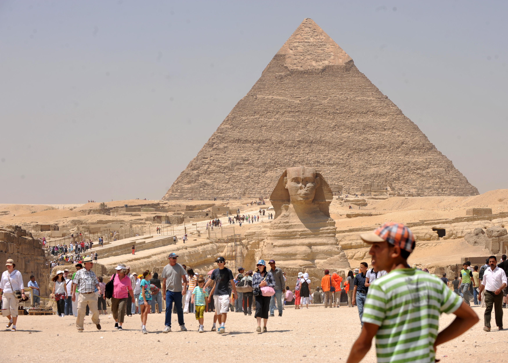
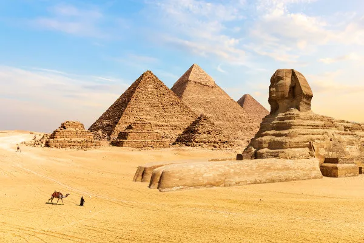
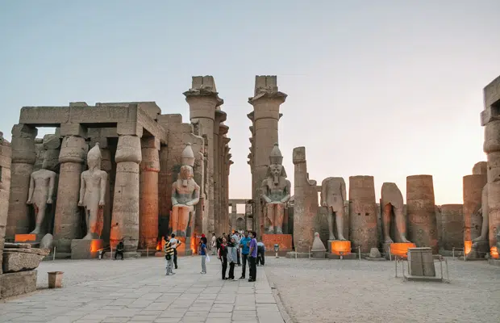
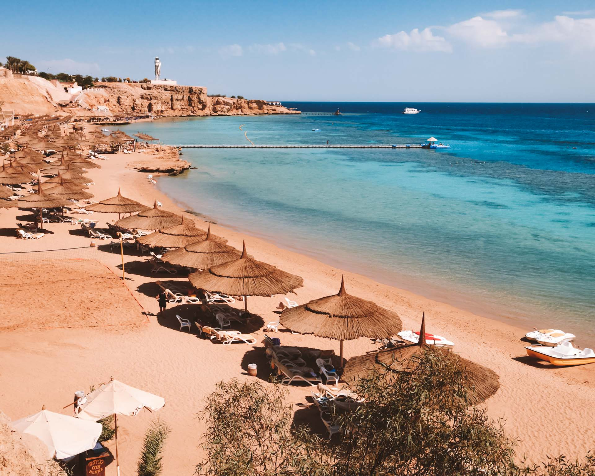
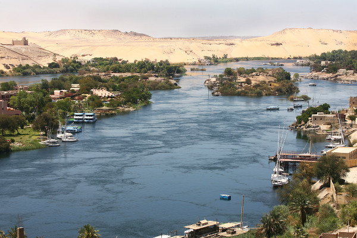

Turismo no Egito
O Egito é um dos destinos turísticos mais fascinantes do mundo, atraindo milhões de visitantes todos os anos por sua rica história, cultura milenar e paisagens únicas. O país oferece uma combinação incrível entre monumentos antigos, cidades vibrantes e belezas naturais, proporcionando experiências inesquecíveis para turistas de todos os estilos.

Entre os pontos turísticos mais marcantes estão as famosas Pirâmides de Gizé e a Esfinge, localizadas próximas à capital Cairo, além dos templos de Luxor e Karnak, que impressionam por sua grandiosidade e riqueza de detalhes. Outro destaque é o Vale dos Reis, onde estão as tumbas de diversos faraós, incluindo Tutancâmon. Para quem busca experiências diferentes, um cruzeiro pelo rio Nilo é uma das atividades mais populares, permitindo conhecer várias cidades históricas ao longo do percurso.
Piramides e Esfinge de Gizé
Templo de Luxor Templo de Karnak
Templo de Karnak
 Vale dos reis
Vale dos reis

Em relação à hospedagem, o país possui uma ampla variedade de opções, desde hotéis simples e econômicos até resorts de luxo. Em grandes cidades e regiões turísticas, é fácil encontrar acomodações confortáveis com preços acessíveis, o que torna o Egito um destino relativamente barato em comparação a outros locais turísticos internacionais.Os custos de viagem variam bastante, mas em geral o Egito é considerado um destino econômico. Alimentação, transporte e ingressos para atrações costumam ter preços acessíveis, principalmente para quem planeja com antecedência. No entanto, passagens aéreas podem representar a maior parte do gasto, dependendo da época do ano.

Por fim, o turismo no Egito é uma experiência única, que une história, cultura e aventura em um só lugar. Seja explorando monumentos antigos, navegando pelo Nilo ou relaxando em praias paradisíacas, o país oferece uma viagem inesquecível que conecta o passado ao presente de forma impressionante.